Napa Valley, or my Quest to Determine Whether Wine is just Capri Sun for Adults
As I sit here at the gate at San Francisco International Airport with a chai latte from Peet's in hand, having woke up at 3:30am to make my flight, I figure now is as good a time as any to reflect back on the last few days touring wineries in Napa and Sonoma.
Going into this trip, my stepmother had high hopes for me that I would come away from it with a greater appreciation for wine. Unfortunately, I did not. Had I not been told that one wine was $50 per bottle and another was $200, I would have had trouble distinguishing between the two. But that's OK.
To back up a bit, I will say that I can enjoy a glass of wine. I don't drink beer (or at least I didn't until very recently, with many thanks to the People's Republic of China, but that's a story for another post), so unless I wanted hard liquor I would always turn to wine at any gathering or night out. Generally, I think wine tastes good. I've considered it a grape juice for adults, at least before I had been exposed to the idea of wine culture. As a child, I would look forward to the Jewish holiday dinners where we would have Manischewitz concord wine. At the time, I found grape juice too sweet for my liking.
Though I wouldn't call myself a wine connoisseur, I'd say I have a generally good understanding of wine. I can list several varieties of wine, and I can probably even tell you whether it is red or white or a rosé (or "brosé" for my dudes out there not comfortable enough with their sexuality to be seen with a pink drink without some clarification). I might even be able to tell you some characteristics about a type of wine—like Riesling is a crisp and sweet German white wine. I even have my own sterling silver wine goblet that I use when watching Game of Thrones. So as I embarked on this trip to wine country, I'd say I was in a good position to learn about wine.
My Original Criteria for Good Wine
I have a very effective rule-of-thumb for determining whether a wine is good:
If a wine is over $20 and has a picture of an animal on the bottle, then it is a good wine.
Me, circa 2013
You might point out that this rule only works when buying a bottle and wouldn't work out well when ordering a glass at a bar or restaurant. For that reason, I have devised a second rule-of-thumb:
When ordering a glass of wine, opt for the second- or third-least expensive wine on the menu
Me, circa 2014
When going out to a restaurant or bar, you don't want to be a cheapskate and drink the cheapest wine on offer. However, most places now know this line of thought that people don't want to feel cheap. Accordingly, they make their second-cheapest wine just as shitty and charge you more. So instead get the third-cheapest wine. It will always be the best value.
These rules-of-thumb have never let me down, though they have been highly criticized and controversial. Some say that you cannot judge a wine by its cover, that the picture on the label or the price tag shouldn't be the sole criteria in determining the quality of a wine. To that objection I have said bullshit!
Past a certain point ($20 in my opinion) most of the enjoyment you get from a glass of wine are the environmental factors surrounding the wine. Are you drinking from a non-plastic glass? Are you surrounding by people you like? Does the picture on the bottle make you happy? Deeper, much of the enjoyment you get from a glass of wine is related to internal associations. If you've trained yourself over the years to appreciate some aspect of a wine (an animal on the bottle for me, tannin levels or acidity for a wine connoisseur), you'll reinforce the enjoyment of those qualities. If someone says a $200 bottle of wine is better than a $20 wine, then I'll believe them because for them (and others trained in the dark art of wine tasting) it truly is.
This trip to Napa valley would put my theory and rules-of-thumb to the ultimate test. Would I taste from a good $200 bottle of wine and find is significantly better than my $25 horse wine? Read on to see what I've learned.
Hamel Family Wines
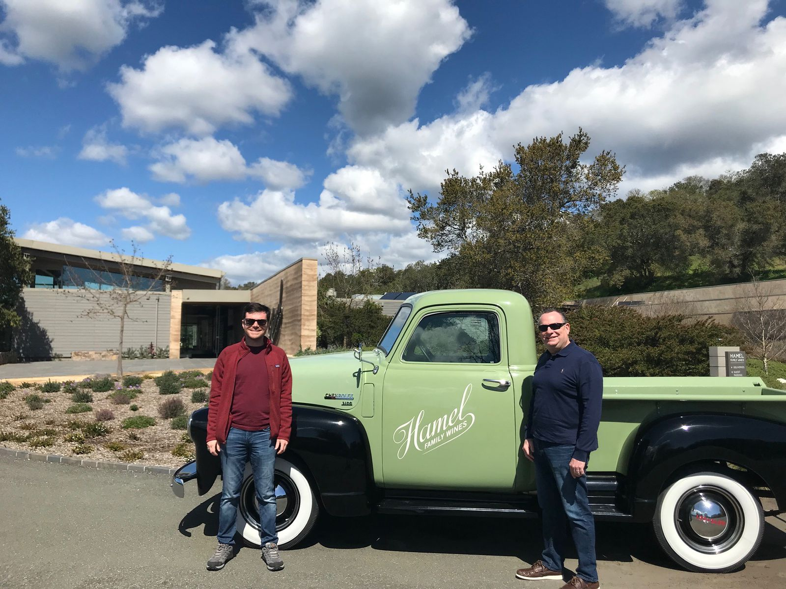
Hamel Family Wines in Sonoma was the first stop on our tour. Having rented a tiny car in San Francisco and driving the hour and a half north, my dad and I went into this lunch wine pairing and tour with just a coffee and a small pastry in our stomachs.
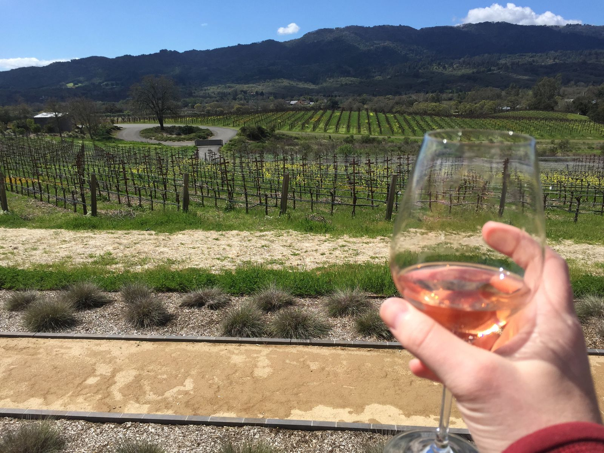
As we pulled up to the vineyard (past a gate that we had to call-in to have it opened), we looked out to a beautiful view. Upon entering the estate, we were greeted with a glass of water. It was sunny and in the low 70's, so we waited outside on the Adirondack chairs for a few minutes until our tour guide, met us. Marty, sporting a tucked-in short sleeve button down shirt, dark jeans, Oakley sunglasses, and a cheerful demeanor, brought us a glass of rosé and began a tour. He explained that the winery employed biodynamic farming practices, which he described as organic on steroids. After he mentioned that some techniques revolve around the moon cycle, I kind of zoned out. In any case, it seems like they've found a way to get better grapes with less water.
For this wine tasting, we had lunch. The four courses, three of which were shown below, were all made by the estate's chef, and they were able to use tofu and celery root in place of pork and steak. Any description I give here could not do these dishes justice. They were just superb, and they would stand on their own even without a red wine pairing.
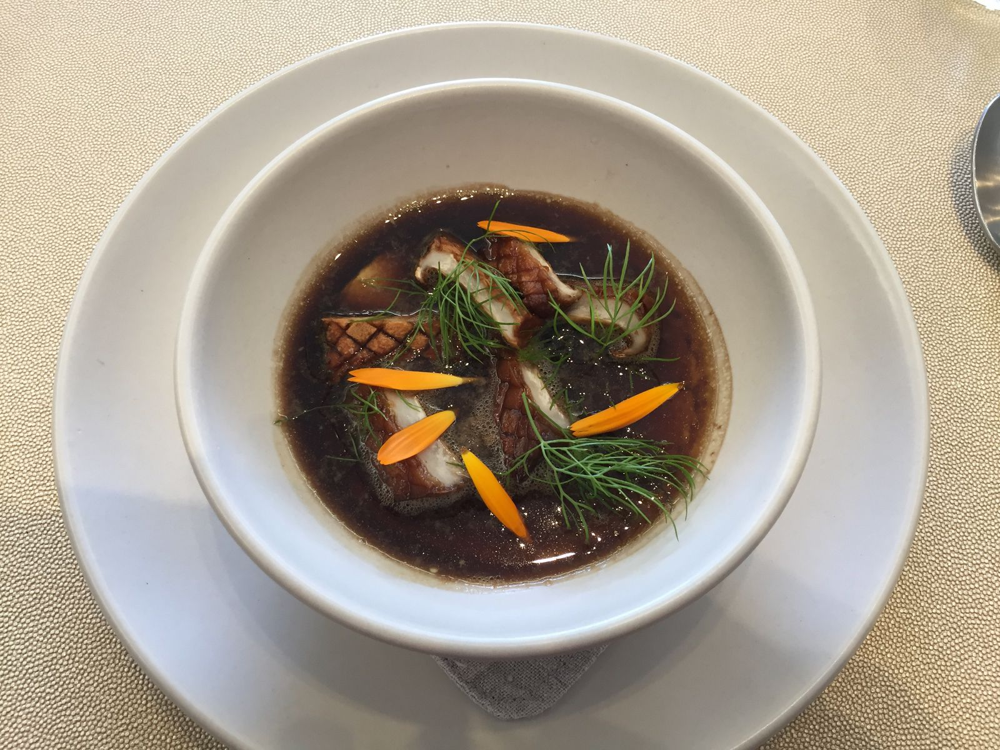
Mushroom and cheese soup 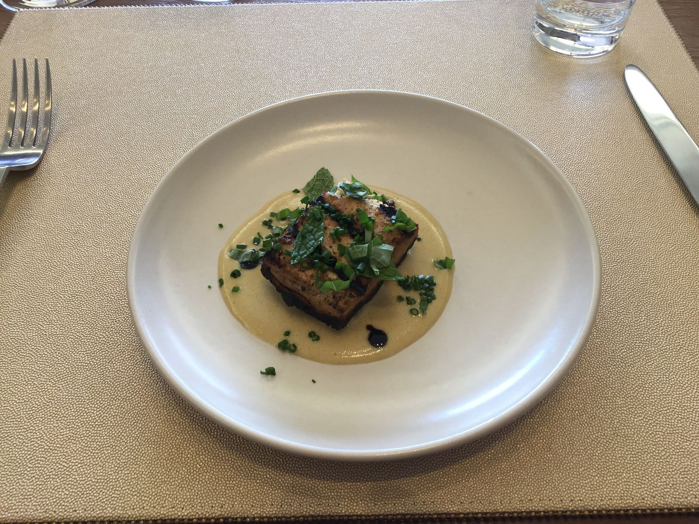
Smoked tofu 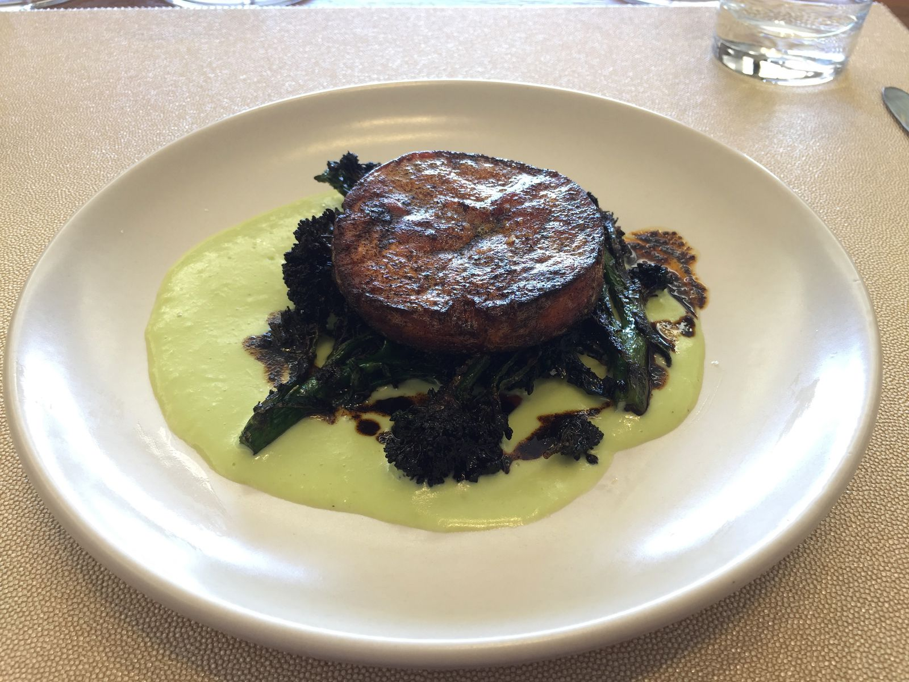
Celery root and broccoli rabe
But of course we are here to talk about wine and not food. Well let me tell you that I have some very excellent news. The mascot of the estate is the badger, and the animal is proudly displayed on the bottle label. So these good wines all met my criteria.
Besides the rosé we got when we arrived, all the wines we tasted were red. I enjoyed all of them, as I expected that I would based upon my rule-of-thumb. I would gladly drink these wines again.
Though the wines were very good, I was more impressed by the beauty of the vineyard and the estate. Perhaps it was just that this one was the first winery that I saw, but I was overwhelmed by the tranquility and beauty of the landscape. However, the thing that I will take away and keep with me longest from this visit is the water bottle they gave me at the end of the tour. Made from glass, it doesn't carry the taste of metal or plastic. With a silicone lid, it keeps out dust and other particles—a problem I have at home with a glass of water by my bed. In the morning, it sometimes acquires a cat hair or some other dust. With this new glass bottle and silicone lid, my nighttime water has stepped up its game.
10/10
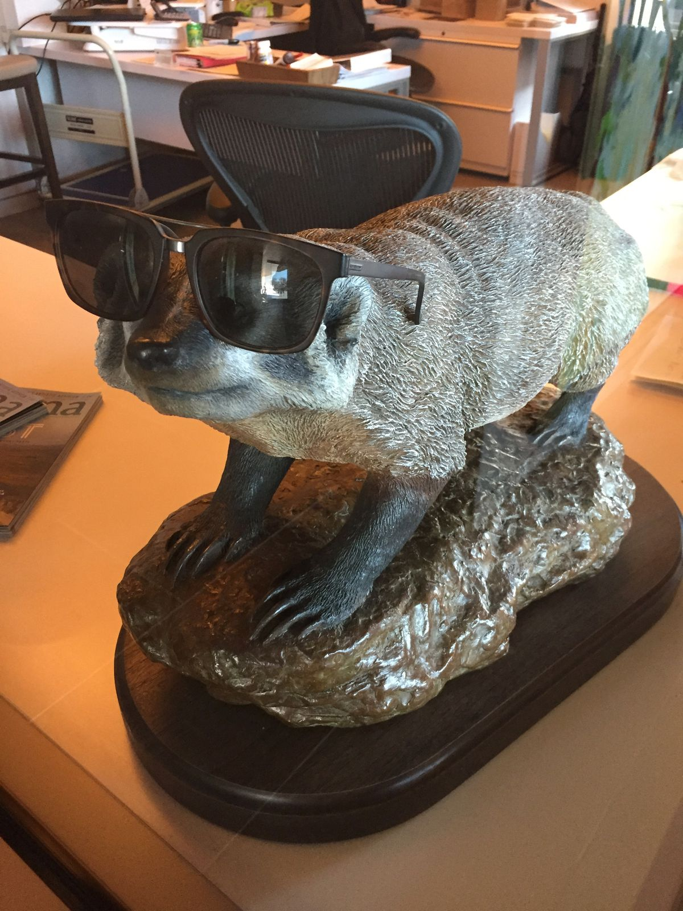
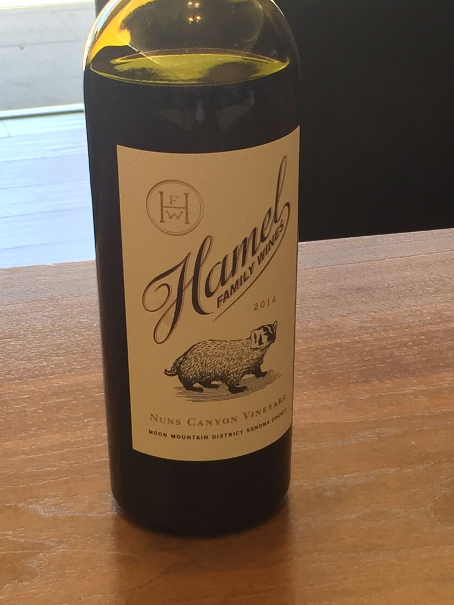
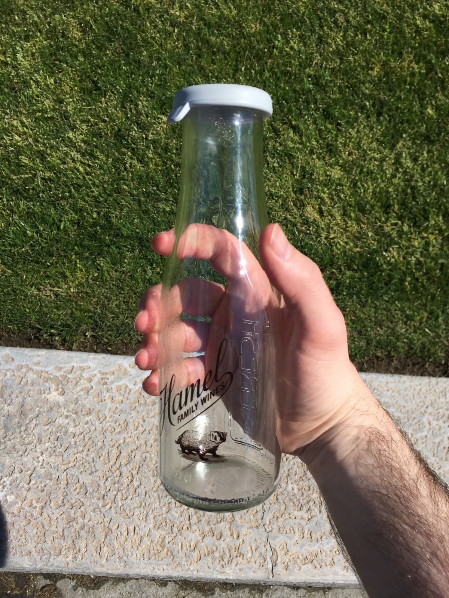
[Redacted] Estates
OK, so the wine business is very secretive and serious. By pulling some strings, my dad managed to get us a tour of a winery that does not give tours and is not open to the public. You cannot buy this wine in stores and you cannot find this wine in restaurants. To get this wine you must be a member of the winery, and the estate does no advertising of any kind. The wine starts at $500 per bottle.
We approached the winery, about 30 minutes outside Napa, in the late morning in the rain, the estate covered in a thick fog. Our guide, Nick, gave us a private tour of the winery and noted that we were the only people there. The estate itself was beautiful, a mix of several cultures, past and present. Nick, a transplant from the northeast, was just as affable as Marty from Hamel Family Wines.
We tasted four wines—a white and three reds. Recently, the estate starting producing a line of wines that is more affordable and accessible. Three of the four wines in the tasting were from this new line. Though there were no animals on the bottle, I thought the wines were good. I would gladly drink them again.
I've been asked not to name this winery or describe that I visited. Serious business, indeed.
10/10
Jarvis Estate
The Jarvis Estate winery was unlike any winery experience I could imagine. The entire winery was underground in a manmade cave and the people on the tour (including the tour guide) were certainly characters.
As we approached the entrance to the cave, we saw massive double doors, spanning at least 15 feet high. The air inside was much cooler. Our host, tour guide, and master sommelier, Dan, greeted us at the desk. He looked like more polished version of Kevin Smith (the filmmaker, not the athlete), and he spoke in a friendly and animated fashion.
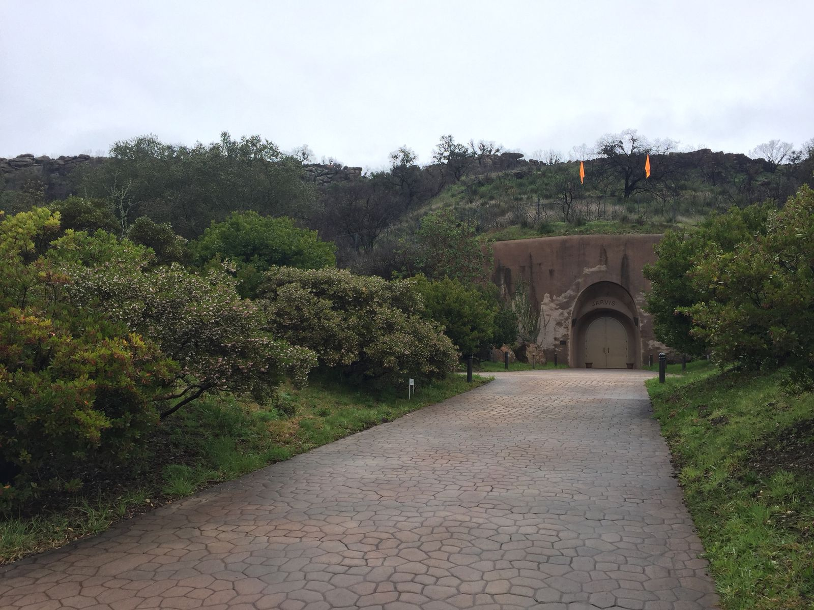
We approached another set of massive doors leading to the center of the winery. Just outside them was a map of the whole estate. Dan told us that Mr. and Mrs. Jarvis—it was always Mr. and Mrs. Jarvis, never William and Leticia—bought the estate in the 80's when they were looking for a second vacation home. The area was federally protected land with no vineyards, so there was little construction that they could do. They were able to plant grapevines covered in netting to prevent animals from eating them. Originally, he sold the grapes to local wineries. When they began to increase their demand requests because of the quality of the grapes, Jarvis cut them off and decided to open his own winery.
Since they couldn't build a winery on-site, Jarvis bought a couple cave digging machines and began to dig out a cave on his property. While it wasn't technically illegal, the city of Napa was pretty pissed and tried to stop him. Jarvis had enough fuck you money to complete his cave and open his winery. Or so the story goes per our guide. I'm paraphrasing, of course.
William Jarvis sounds like a complex man. He made his fortune in the early days of Silicon Valley, him being one of the first several dozen employees at HP where he developed a fiber optics technology that laid the groundwork for the first cell phone networks. He formed his own company around that technology and subsequently sold it to a large Japanese company. At worst, he used his fortune to build a winery for himself, disturbing federally protected land and pissing off all his neighbors and city officials in the process. At best, he bought and preserved federally protected land, creating a great new type of winery and supporting the community in the process. He created and supports an arts conservatory in downtown Napa, which is pretty cool in and of itself. Overall, as far as eccentric billionaires go, he seems pretty decent. Now, back to the tour.
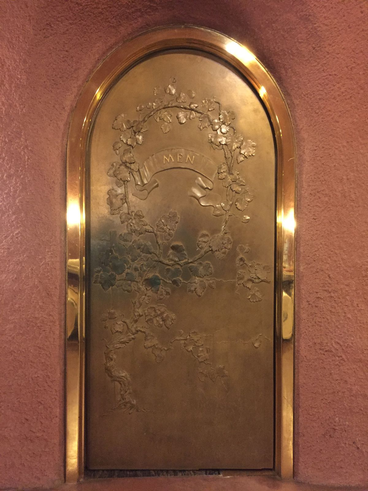
Inside the winery, there was a small waterfall at the center. The basic shape was a circle with a line going through the center. The president of the company, Jarvis' son, had an elaborately decorated door, similar to the one to the men's bathroom.
Our guide, Dan, described the wine maker and his process. Jarvis Estate doesn't filter its wines. Most wineries do filter their wines. The filtration process than removes tannin, a naturally occurring element in grapes that typically adds bitterness, astringency, and complexity to the wine. Because the grapes are handled and pressed very carefully, there is no need to filter. Or at least this is what Dan said.
This lack of filtration genuinely makes the Jarvis wine unique in my opinion. It's certainly something that they should be talking about, perhaps more so than the $1M Italian bottling machine or elaborate annual parties in the cave atrium. While I struggled to taste the difference, I expect that someone with a better tongue than I certain could.
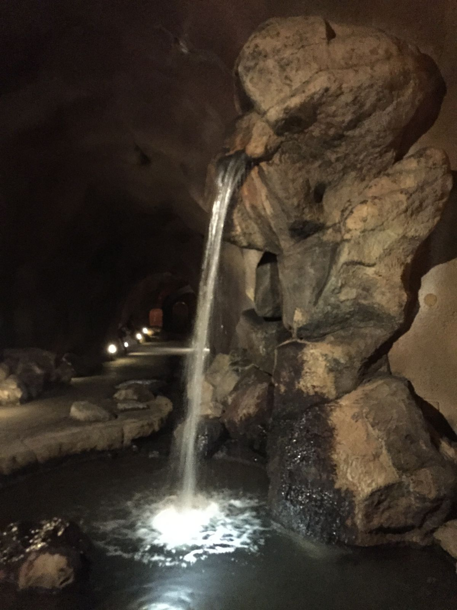
After the tour, we had a wine testing—the most wines and cheeses yet. There were seven wines: one white and six reds. I maybe got through half. There was a goat cheese, a brie, dried cherries, almonds, and water crackers. Dan said not to eat a whole cracker in one bite because it would dry up my mouth and take away from the taste of the wine. Based upon the almost giggle-inducing swishing and sucking noises he made when tasting his wines, I trust that the knows that he is talking about.
Joining us were a mother and daughter, roughly the same ages as my dad and me. Upon first glance, I suspected that they were from LA or southern Florida—it turned out to be LA. The daughter was employee number four at a Chicago-based advertising and marketing startup, where she wore a lot of hats and grew with the company. As is the way of many a startup, they had recently gone under, likely not helped by the fact that the core of their business model revolved around working with "influencers". She was in California visiting family and friends before returning to Chicago in search of a new job at another startup. Her mother was a writer of some sort, though I didn't pick up much of the details. Her father (not present) was a dental surgeon in LA who had just recently purchased a Form 2 to make surgical guides (yay). They said that he had printed models and had them all over the office, boasting about how much money he was saving in the process.
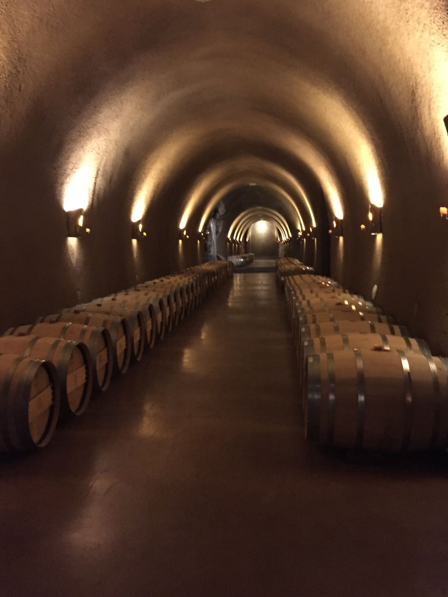
Also joining us were a couple and their son, though the son didn't join until after the tour for the wine tasting. Ages, again, were similar to my dad and me. The husband was a seeming wealthy man who spoke with an accent that says "I have money". He didn't say what he did for a living, but he was very excited about joining the Jarvis "Inner Circle" membership and getting invited to the cave parties. The membership runs you about $1,700 annually, after the $50 to go on the half-year waitlist. He was also very curious about how they made their brie cheese ("I normally hate brie but this is great"), and he appeared crestfallen upon hearing that it was from Whole Foods and not some boutique local vendor. The wife (unfortunately) was the spitting image of Dolores Umbridge, down to the shade and style of the pink jacket. The son was a Harvard graduate, currently working in Austin at a private equity firm. He didn't talk at all about his job because, as far as I can tell, everyone who works in private equity hates their job and profession in general.
How do I know all this, you ask? We didn't talk to each other and barely made eye contact for the tour, but after a few sips of wine we all started talking. We learned that the woman in the pink jacket and the daughter in the other group were both in the same sorority at USC and that their close friends from their time in college are actually a mother/daughter pair. Small world. In any case, I enjoyed sharing my wine tasting with all these people and learning about their lives and unexpected connections. Without signing up with the Jarvis winery tour, I certainly would not have expected to cross paths.
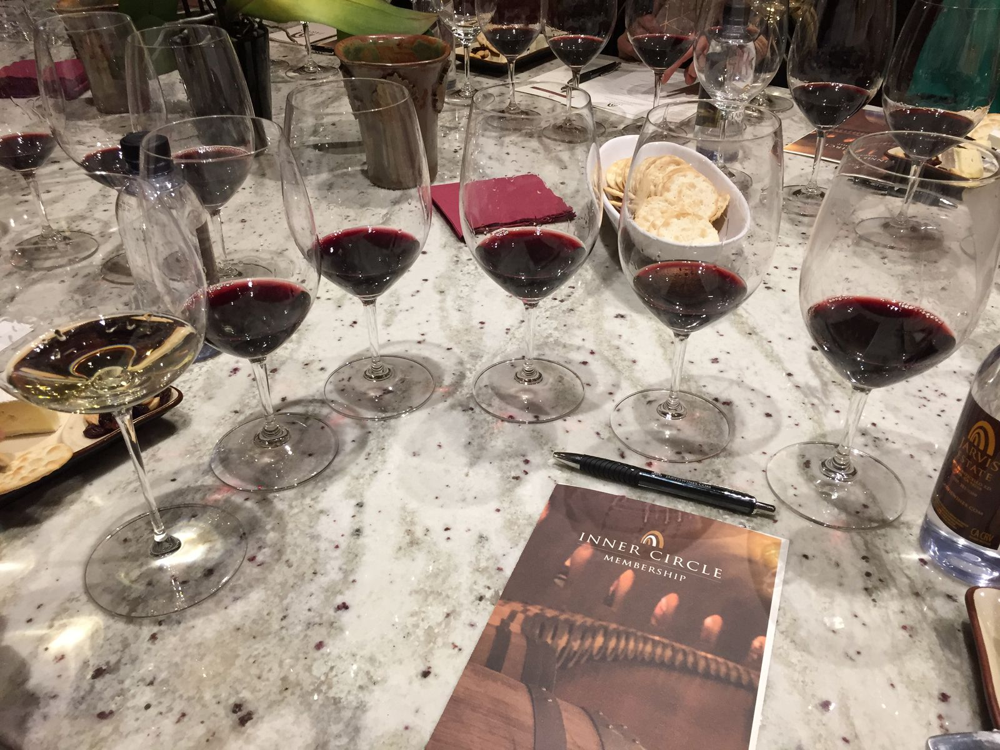
Honestly, I have no idea what to make of my experience at Jarvis Estate. I enjoyed it thoroughly, though probably not for the reasons they would expect.
10/10
Roundup
This is as good a time as any to note that I am basically the opposite of a super-taster. Some people can detect small differences in wine (and food), but I certainly cannot. The fanciest of fancy food and drink is probably wasted on me. I have been to a Michelin star restaurant once. I thought it was very good, but I did not appreciate it as much as I should have.
With that in mind, I hope you can see that the above is not a hatchet job on the luxury wine industry but rather an outsider's perspective trying to understand a world he cannot taste. Can I distinguish between good and bad wine? Yes. Can I distinguish between good and great wine? Not really. Would I appreciate a great $200 bottle of wine? Yes, but only share at your own expense. For me, it will taste great only because of the feeling that sharing is caring, and sharing a $200 bottle of wine is caring a lot.
My time in Napa valley was wonderful. I got to see beautiful vineyards and estates, I was exposed to new cultures, and I enjoyed great food and wine. I learned a lot from affable and knowledgable sommeliers and I got to do this all while spending time with my dad in a wonderful climate.
Despite not coming away from the trip with a much sharper taste for wines, I had a great experience meeting new people and immersing myself in a culture that I otherwise wouldn't encounter. And best of all, my rule-of-thumb for choosing a wine with an animal on the bottle that's more than $20 still stands...at least for me.
p.s. I was EXTREMELY disappointed that I did not meet a single winery dog at any of the three wineries that I visited, and I feel VERY misled by the "Winery Dogs of Napa Valley" coffee table book on prominent display at the bed and breakfast.